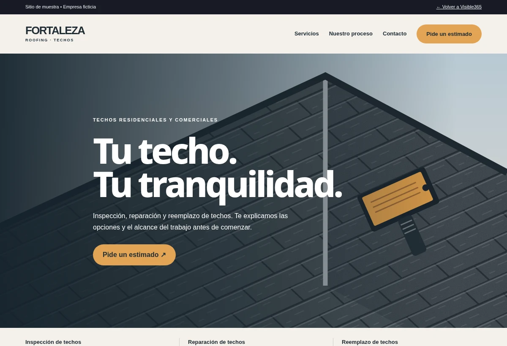

Muestra tus proyectos reales
Organiza fotos de reparaciones, reemplazos y materiales de roofing con permiso del cliente. Explica qué trabajo hiciste y qué incluye.
Que tus techos hablen bien de tu negocio.
Un dueño de casa que necesita reparar o cambiar su techo quiere ver tu trabajo, saber si atiendes su zona y pedir una inspección sin complicaciones. Diseñamos y mantenemos tu página web en Estados Unidos para que tú te enfoques en la obra.
Pide una evaluación gratis ↗
Concepto ficticio · Ver ejemplo interactivo ↗Organiza fotos de reparaciones, reemplazos y materiales de roofing con permiso del cliente. Explica qué trabajo hiciste y qué incluye.
Presenta tus servicios y zonas de trabajo. Un formulario sencillo puede preguntar por la ubicación, el tipo de techo y el problema.
Actualiza tus zonas, disponibilidad y credenciales verificadas. Explica tus inspecciones sin prometer que un seguro pagará por el trabajo.
Desde $149 al mes + $299 de configuración inicial. Essential incluye 3 páginas, un idioma, alojamiento, SSL y 30 minutos de actualizaciones al mes. Growth incluye 5 páginas principales, dos idiomas y 60 minutos de actualizaciones al mes por $249 al mes + $499 de configuración. Dominio, correo y trabajo extra se cotizan aparte. No garantizamos posiciones en Google ni clientes.
Ver los planes ↗Sí. Podemos describir tus servicios de inspección y reparación, sin prometer cobertura de seguros ni actividades que requieran autorización.
Sí, con autorización y descripciones reales. Organizamos las fotos por tipo de servicio o material.
Sí. Diseñamos un formulario sencillo y opciones de contacto; verificamos su entrega antes de promoverlo.